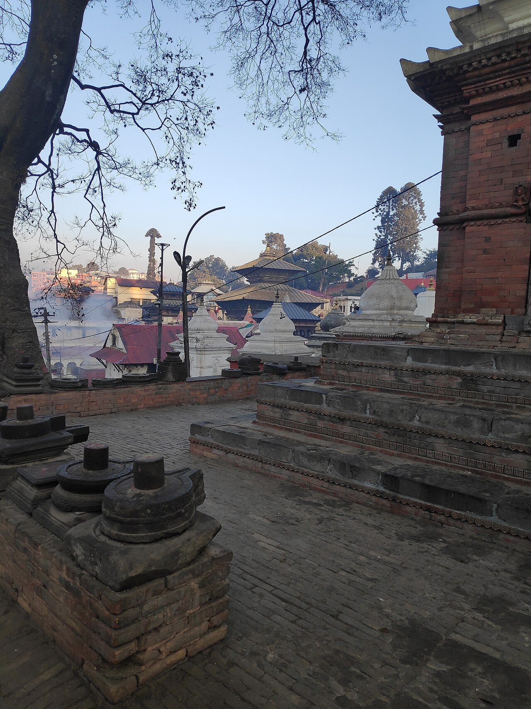
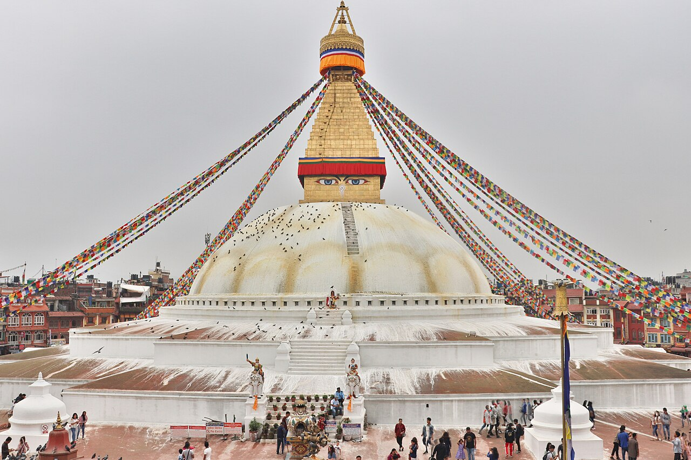
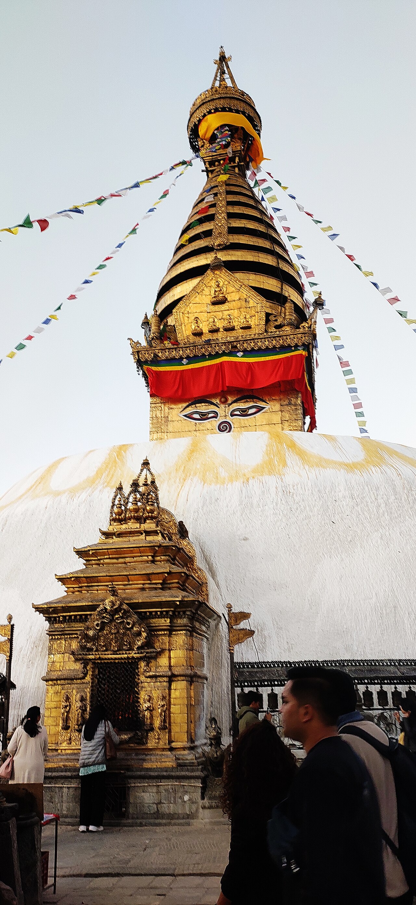
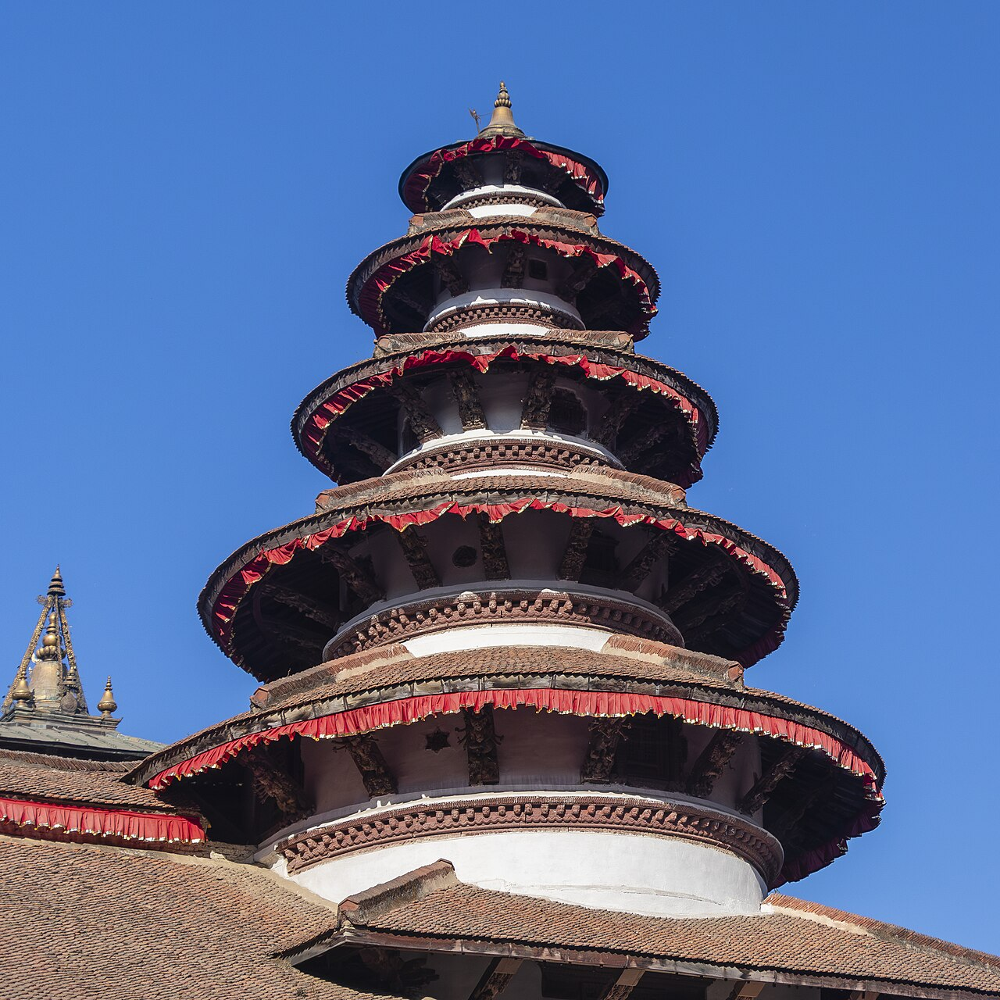
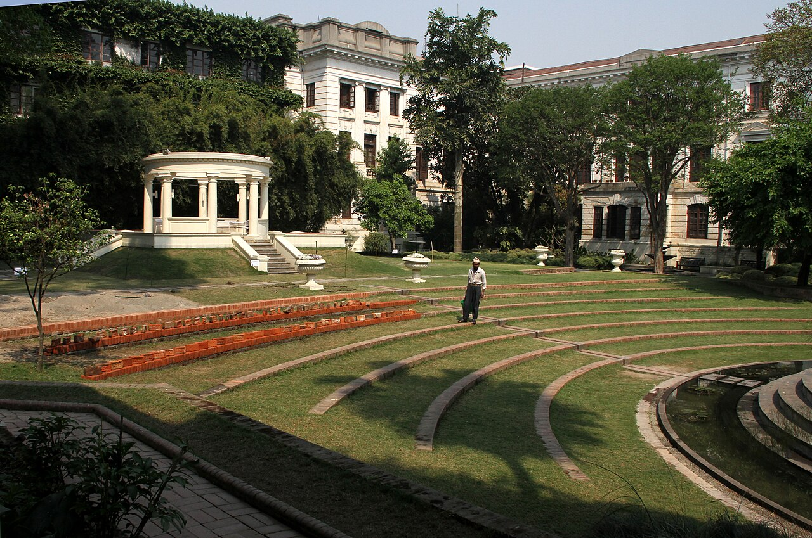
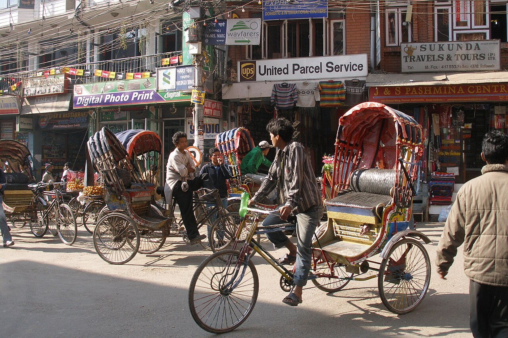

Pashupatinath Temple

A famous Hindu temple dedicated to Lord Shiva and a UNESCO World Heritage Site.
The Valley of Temples, Rich Heritage, and Himalayan Wonders
Kathmandu, the capital city of Nepal, is a beautiful destination known for its rich cultural heritage, ancient temples, historic monuments, traditional architecture, and breathtaking Himalayan surroundings. It is a perfect blend of history, spirituality, nature, and modern lifestyle.

A famous Hindu temple dedicated to Lord Shiva and a UNESCO World Heritage Site.

One of the largest stupas in Nepal and an important Buddhist pilgrimage destination.

Also known as the Monkey Temple, offering beautiful views of Kathmandu Valley.

A historic royal palace square featuring traditional Newari architecture.

A peaceful historical garden in the middle of Kathmandu.

A popular tourist area known for shopping, restaurants, cafes, and nightlife.
September to November and March to May are generally considered excellent periods to visit Kathmandu because of pleasant weather and clearer mountain views.